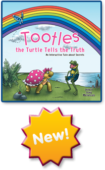

Of course, Tootles takes the alligator at his word. She doesn’t tell a soul about the warning— especially not her mommy, for fear of losing her. When Tootles accidentally tells her new friend, Freddie the Fearless, Free-Spirited Frog, an exaggerated version of what happened to her leg, she becomes physically sick with worry that the alligator will come back to carry out his threats.
Mommy eventually coaxes the truth from the miserably ill Tootles. Then Mommy assures the scared little turtle that the alligator is only trying to frighten her to prevent anyone from learning the terrible truth. When Tootles finally understands that Mommy is not afraid of the nasty gator, Tootles tearfully admits all of the scary threats the alligator made.
After Tootles takes her power back from the gluttonous gator, she and Freddie ask interactive questions at the end of the book to engage readers in a candid discussion of good, bad, or scary secrets.